<!DOCTYPE html>
<html lang="id">
<head>
<meta charset="utf-8">
<title>Laporan Praktikum Pertemuan 7 - Laela Rustiani (23670004)</title>
<style>
  @page {
    size: A4;
    margin: 25mm 20mm 20mm 20mm;
    @bottom-right {
      content: counter(page);
      font-family: 'Times New Roman', Times, serif;
      font-size: 11pt;
      color: #000000;
    }
  }

  * {
    box-sizing: border-box;
    -webkit-print-color-adjust: exact !important;
    print-color-adjust: exact !important;
  }

  body {
    font-family: 'Times New Roman', Times, serif;
    color: #000000;
    background: #ffffff;
    line-height: 1.5;
    font-size: 12pt;
    margin: 0;
    padding: 0;
  }

  .page-break { page-break-after: always; }
  .avoid-break { page-break-inside: avoid; }

  /* Cover Page Format Standar Akademik */
  .cover {
    height: 92vh;
    display: flex;
    flex-direction: column;
    justify-content: space-between;
    text-align: center;
    padding: 20px 0;
    color: #000000;
  }
  .cover-instansi {
    font-size: 14pt;
    font-weight: bold;
    text-transform: uppercase;
    line-height: 1.4;
  }
  .cover-judul-box {
    margin: 60px 0 40px 0;
  }
  .cover-judul {
    font-size: 16pt;
    font-weight: bold;
    text-transform: uppercase;
    line-height: 1.5;
    margin-bottom: 14px;
  }
  .cover-subjudul {
    font-size: 12pt;
    font-weight: normal;
    line-height: 1.4;
    max-width: 600px;
    margin: 0 auto;
  }
  .cover-tujuan {
    font-size: 11pt;
    font-style: italic;
    margin-top: 25px;
  }
  .cover-penyusun {
    margin: 40px auto;
    font-size: 12pt;
    text-align: left;
    display: inline-block;
  }
  .cover-penyusun table {
    border-collapse: collapse;
    margin: 0 auto;
  }
  .cover-penyusun td {
    padding: 4px 8px;
    font-size: 12pt;
    color: #000000;
  }
  .cover-tahun {
    font-size: 12pt;
    font-weight: bold;
    text-transform: uppercase;
    line-height: 1.4;
  }

  /* Headings Akademik */
  h1.bab-title {
    font-size: 14pt;
    font-weight: bold;
    text-transform: uppercase;
    text-align: center;
    margin-top: 30px;
    margin-bottom: 20px;
    color: #000000;
  }
  h2.sub-title {
    font-size: 12pt;
    font-weight: bold;
    margin-top: 18px;
    margin-bottom: 8px;
    color: #000000;
  }
  h3 {
    font-size: 12pt;
    font-weight: bold;
    margin-top: 14px;
    margin-bottom: 6px;
    color: #000000;
  }
  p {
    text-align: justify;
    text-indent: 36px;
    margin-bottom: 8px;
    margin-top: 0;
    color: #000000;
  }
  p.no-indent {
    text-indent: 0;
  }
  ul, ol {
    margin-top: 4px;
    margin-bottom: 10px;
    padding-left: 40px;
  }
  li {
    margin-bottom: 4px;
    text-align: justify;
  }

  /* Tabel Akademik Standar Hitam Putih */
  table.clean-table {
    width: 100%;
    border-collapse: collapse;
    margin: 12px 0 16px 0;
    font-size: 10pt;
  }
  table.clean-table th, table.clean-table td {
    border: 1px solid #000000;
    padding: 6px 8px;
    text-align: left;
    vertical-align: top;
    color: #000000;
  }
  table.clean-table th {
    background: #f2f2f2;
    font-weight: bold;
    text-align: center;
  }

  /* Screenshot Figure */
  .figure-box {
    margin: 16px 0;
    text-align: center;
    page-break-inside: avoid;
  }
  .figure-box img {
    max-width: 95%;
    height: auto;
    border: 1px solid #444444;
  }
  .figure-caption {
    margin-top: 6px;
    font-size: 10pt;
    font-style: italic;
    color: #000000;
  }

  pre.clean-code {
    border: 1px solid #000000;
    background: #fafafa;
    padding: 10px;
    font-family: 'Courier New', Courier, monospace;
    font-size: 9.5pt;
    line-height: 1.4;
    overflow-x: auto;
    margin: 10px 0;
    color: #000000;
  }
</style>
</head>
<body>

<!-- ======================================================================= -->
<!-- COVER RESMI MAHASISWA                                                   -->
<!-- ======================================================================= -->
<div class="cover">
  <div class="cover-instansi">
    LAPORAN PRAKTIKUM TEKNOLOGI WEB SERVICE<br>
    PROGRAM STUDI INFORMATIKA<br>
    FAKULTAS TEKNIK DAN INFORMATIKA
  </div>

  <div class="cover-judul-box">
    <div class="cover-judul">
      AUTENTIKASI DAN OTORISASI JSON WEB TOKEN (JWT)<br>
      SERTA IMPLEMENTASI KEAMANAN DASAR RESTFUL API
    </div>
    <div class="cover-subjudul">
      Studi Kasus Pengembangan REST API Mahasiswa dengan Role-Based Access Control, Password Hashing Bcrypt, Rate Limiting, dan Audit Logging
    </div>
    <div class="cover-tujuan">
      Disusun untuk memenuhi tugas praktikum mata kuliah Teknologi Web Service (Pertemuan 7)
    </div>
  </div>

  <div class="cover-penyusun">
    <table>
      <tr>
        <td style="font-weight: bold; width: 140px;">Nama Mahasiswa</td>
        <td>:</td>
        <td style="font-weight: bold;">LAELA RUSTIANI</td>
      </tr>
      <tr>
        <td style="font-weight: bold;">NPM</td>
        <td>:</td>
        <td style="font-weight: bold;">23670004</td>
      </tr>
      <tr>
        <td style="font-weight: bold;">Program Studi</td>
        <td>:</td>
        <td>Informatika</td>
      </tr>
      <tr>
        <td style="font-weight: bold;">Tahun Akademik</td>
        <td>:</td>
        <td>2026 / 2027 (Semester Gasal)</td>
      </tr>
    </table>
  </div>

  <div class="cover-tahun">
    SEMARANG<br>
    2026
  </div>
</div>

<div class="page-break"></div>

<!-- ======================================================================= -->
<!-- KATA PENGANTAR                                                          -->
<!-- ======================================================================= -->
<h1 class="bab-title">KATA PENGANTAR</h1>

<p>
  Puji dan syukur saya panjatkan ke hadirat Tuhan Yang Maha Esa atas berkat, rahmat, dan karunia-Nya sehingga penyusunan Laporan Praktikum Pertemuan 7 Mata Kuliah Teknologi Web Service dengan judul <strong>"Autentikasi dan Otorisasi JSON Web Token (JWT) serta Implementasi Keamanan Dasar RESTful API"</strong> dapat diselesaikan dengan baik dan tepat waktu.
</p>
<p>
  Laporan ini menyajikan hasil implementasi sistem proteksi web service berbasis REST API yang dibangun menggunakan bahasa pemrograman PHP native dan basis data MySQL. Fokus utama kegiatan praktikum dan tugas pengembangan ini meliputi pembuktian identitas menggunakan standar token tanpa status (<em>stateless token</em>) JWT RFC 7519, penerapan otorisasi berbasis peran (<em>Role-Based Access Control / RBAC</em>), perlindungan kata sandi menggunakan fungsi hash satu arah Bcrypt, penangkalan serangan injeksi melalui PDO Prepared Statements, pembatasan laju permintaan (<em>rate limiting</em>), serta pencatatan audit log transaksi.
</p>
<p>
  Seluruh rangkaian pengujian objektif telah diverifikasi secara menyeluruh menggunakan skrip penguji klien otomatis <code>client/test_client.php</code> dengan hasil mutlak 45 dari 45 pengujian dinyatakan lulus (100% PASS).
</p>
<p>
  Penulis menyadari bahwa dalam penyusunan laporan ini masih terdapat ruang untuk perbaikan. Oleh karena itu, kritik dan saran yang membangun dari dosen pengampu dan pembaca sangat diharapkan demi kesempurnaan kajian teknis di masa mendatang.
</p>

<p class="no-indent" style="text-align: right; margin-top: 40px;">
  Semarang, 26 Oktober 2026<br><br><br><br>
  <strong>Laela Rustiani</strong><br>
  NPM. 23670004
</p>

<div class="page-break"></div>

<!-- ======================================================================= -->
<!-- BAB I                                                                   -->
<!-- ======================================================================= -->
<h1 class="bab-title">BAB I<br>LANDASAN TEORI & ARSITEKTUR KEAMANAN</h1>

<h2 class="sub-title">1.1 Perbedaan Konseptual Autentikasi dan Otorisasi</h2>
<p>
  Keamanan layanan web service berakar pada dua mekanisme fundamental yang memiliki peran dan status respons protokol HTTP yang sangat tegas:
</p>
<ul>
  <li>
    <strong>Autentikasi (Authentication — <em>"Siapa kamu?"</em>)</strong>: Merupakan tahapan di mana pengguna membuktikan identitas dirinya kepada sistem. Pengguna mengirimkan identitas berupa username dan kata sandi saat login, atau menyertakan Bearer Token JWT pada header request <code>Authorization</code> saat mengakses endpoint terproteksi. Kegagalan pada tahapan ini menghasilkan status HTTP <strong>401 Unauthorized</strong> disertai header <code>WWW-Authenticate: Bearer</code>.
  </li>
  <li>
    <strong>Otorisasi (Authorization — <em>"Bolehkah kamu melakukan hal ini?"</em>)</strong>: Merupakan tahapan penentuan hak akses atau wewenang dari pengguna yang identitasnya telah terbukti sah. Server memeriksa apakah peran (<em>role</em>) pengguna memiliki izin untuk menjalankan method HTTP atau endpoint yang diminta. Kegagalan pada tahapan ini menghasilkan status HTTP <strong>403 Forbidden</strong>.
  </li>
</ul>

<h2 class="sub-title">1.2 Struktur dan Integritas JSON Web Token (JWT)</h2>
<p>
  JSON Web Token (RFC 7519) adalah standar terbuka untuk mentransmisikan klaim informasi antar pihak secara ringkas dan aman. Token JWT bersifat <em>stateless</em>, artinya server tidak perlu menyimpan sesi login di memori maupun tabel sesi basis data, melainkan memvalidasi token secara independen melalui verifikasi kriptografis.
</p>
<p class="no-indent">
  Struktur token JWT tersusun atas tiga segmen Base64URL yang dipisahkan oleh karakter titik:
</p>
<pre class="clean-code">
HEADER . PAYLOAD . SIGNATURE
[alg: HS256, typ: JWT] . [sub, username, role, iat, exp] . [HMAC-SHA256 Signature]
</pre>
<ol>
  <li><strong>Header</strong>: Berisi metadata mengenai tipe token dan algoritma penandatanganan (HS256).</li>
  <li>
    <strong>Payload</strong>: Memuat klaim identitas pengguna seperti <code>sub</code> (ID pengguna), <code>username</code>, <code>role</code> (admin, dosen, atau user), serta masa berlaku token (<code>iat</code> dan <code>exp</code>). Payload ini hanya di-encode dalam format Base64URL dan tidak dienkripsi, sehingga kata sandi tidak boleh disimpan di dalam payload.
  </li>
  <li>
    <strong>Signature</strong>: Merupakan tanda tangan digital yang dihitung menggunakan algoritma HMAC-SHA256 dari gabungan header dan payload dengan kunci rahasia server (<code>$jwt_secret</code>). Tanda tangan ini menjamin integritas token. Jika penyerang memanipulasi klaim peran menjadi <code>admin</code>, server akan mendeteksi ketidakcocokan tanda tangan dan menolak token secara otomatis.
  </li>
</ol>

<h2 class="sub-title">1.3 Pengamanan Kata Sandi dengan Hashing Bcrypt</h2>
<p>
  Sistem menerapkan kebijakan keamanan mutlak bahwa kata sandi pengguna tidak boleh disimpan dalam bentuk teks biasa (<em>plaintext</em>) maupun enkripsi reversibel. Kata sandi diolah menggunakan algoritma adaptif <strong>Bcrypt</strong> via fungsi bawaan PHP <code>password_hash($password, PASSWORD_DEFAULT)</code>. Setiap komputasi hash menghasilkan garam acak (<em>salt</em>) unik sehingga dua kata sandi yang sama akan memiliki hash yang sepenuhnya berbeda di database, menggagalkan teknik serangan <em>Rainbow Table</em>. Pencocokan kata sandi dilakukan secara aman via <code>password_verify()</code>.
</p>

<h2 class="sub-title">1.4 Pertahanan SQL Injection, Rate Limiting, dan Audit Logging</h2>
<p>
  Seluruh interaksi data dilakukan menggunakan <strong>PDO Prepared Statements</strong> dengan parameter terikat (<em>parameterized queries</em>), sehingga karakter kutip maupun logika SQL yang dikirim penyerang tidak dapat mengubah struktur query basis data.
</p>
<p>
  Untuk menangkal serangan tebakan kata sandi secara berulang (<em>brute force</em>), sistem membatasi kegagalan login maksimal 5 kali dalam rentang 1 menit untuk kombinasi IP dan username yang sama. Percobaan ke-6 langsung diblokir dengan respons <strong>HTTP 429 Too Many Requests</strong> dan header <code>Retry-After: 60</code>. Selain itu, seluruh aktivitas request dicatat ke tabel <code>log_api</code> yang memuat alamat IP, waktu transaksi, path URL, status response, dan username pengakses.
</p>

<div class="page-break"></div>

<!-- ======================================================================= -->
<!-- BAB II                                                                  -->
<!-- ======================================================================= -->
<h1 class="bab-title">BAB II<br>PANDUAN SETUP LINGKUNGAN PENGEMBANGAN LARAGON</h1>

<p>
  Laragon merupakan paket web server portabel yang digunakan sebagai lingkungan eksekusi utama pada praktikum ini. Berikut adalah tahapan setup proyek <code>api-mhs-auth</code> pada Laragon secara berurutan:
</p>

<h2 class="sub-title">2.1 Penempatan Direktori Proyek</h2>
<p>
  Folder proyek ditempatkan pada direktori web root Laragon yang terletak di <code>C:\laragon\wwwpi-mhs-auth</code>. Di dalam folder tersebut terdapat subdirektori <code>server</code> yang memuat berkas API, subdirektori <code>client</code> untuk program penguji dan antarmuka web, subdirektori <code>database</code> untuk berkas skrip SQL, serta subdirektori <code>latihan</code> untuk pengujian mandiri.
</p>

<h2 class="sub-title">2.2 Konfigurasi Modul Apache `mod_rewrite` & Header `Authorization`</h2>
<p>
  Pada web server Apache, header HTTP <code>Authorization</code> sering dipotong oleh modul FastCGI. Agar token Bearer JWT dapat diterima oleh PHP, berkas <code>server/.htaccess</code> dikonfigurasi dengan aturan penulisan ulang (<em>rewrite rule</em>) sebagai berikut:
</p>
<pre class="clean-code">
RewriteEngine On

# Teruskan Header Authorization ke Environment PHP
RewriteCond %{HTTP:Authorization} .
RewriteRule .* - [E=HTTP_AUTHORIZATION:%{HTTP:Authorization}]

# Routing URL menuju index.php
RewriteCond %{REQUEST_FILENAME} !-f
RewriteCond %{REQUEST_FILENAME} !-d
RewriteRule ^ index.php [L]
</pre>
<p>
  Pastikan modul Apache <code>rewrite_module</code> telah aktif melalui menu Laragon (Klik kanan tray Laragon $	o$ Apache $	o$ modules $	o$ centang <code>rewrite_module</code>).
</p>

<h2 class="sub-title">2.3 Impor Basis Data MySQL</h2>
<p>
  Layanan basis data MySQL dijalankan dengan menekan tombol <strong>Start All</strong> pada antarmuka Laragon. Pengguna kemudian membuka aplikasi HeidiSQL atau phpMyAdmin (<code>http://localhost/phpmyadmin</code>) dengan kredensial default: host <code>127.0.0.1</code>, port <code>3306</code>, user <code>root</code>, dan password dikosongkan. Seluruh query pada berkas <code>database/mhs.sql</code> dieksekusi untuk membentuk database <code>kampus_db</code>, tabel <code>mhs</code>, <code>users</code>, dan <code>log_api</code>, serta mengisikan data pengguna awal (admin, budi, dan dosen1).
</p>

<h2 class="sub-title">2.4 Pengujian Koneksi Database</h2>
<p>
  Koneksi PDO dikelola pada berkas <code>server/koneksi.php</code> dengan parameter host <code>127.0.0.1</code>, user <code>root</code>, dan database <code>kampus_db</code>. Endpoint dasar layanan API dapat diakses pada URL: <code>http://localhost/api-mhs-auth/server</code>.
</p>

<div class="page-break"></div>

<!-- ======================================================================= -->
<!-- BAB III                                                                 -->
<!-- ======================================================================= -->
<h1 class="bab-title">BAB III<br>BEDAH SOURCE CODE LENGKAP & SCREENSHOT SISTEM</h1>

<h2 class="sub-title">3.1 Pustaka Kriptografi Token: `server/jwt.php`</h2>
<p>
  Berkas <code>server/jwt.php</code> mengelola fungsionalitas pembuatan dan validasi token JWT. Fungsi <code>buat_token()</code> menyisipkan timestamp pembuatan (<code>iat</code>) dan kedaluwarsa (<code>exp</code>), menyusun header HS256, dan menghitung tanda tangan digital HMAC-SHA256. Fungsi <code>cek_token()</code> memverifikasi keutuhan 3 segmen token, menghitung ulang tanda tangan menggunakan rahasia server, serta membandingkannya via <code>hash_equals()</code> untuk mencegah serangan pengukuran waktu (<em>timing attacks</em>).
</p>

<div class="figure-box">
  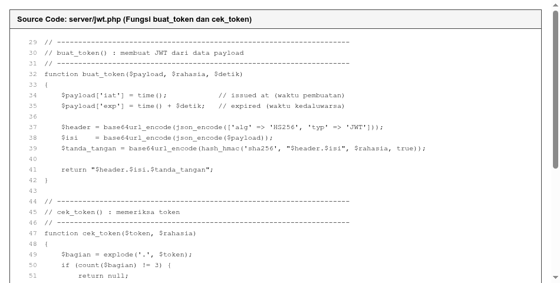
  <div class="figure-caption">Gambar 3.1: Tangkapan Layar Source Code `server/jwt.php` (Fungsi `buat_token` dan `cek_token`)</div>
</div>

<h2 class="sub-title">3.2 Middleware Keamanan & RBAC: `server/fungsi.php`</h2>
<p>
  Berkas <code>server/fungsi.php</code> memuat fungsi utilitas penjaga akses. Fungsi <code>wajib_login()</code> memeriksa keberadaan token Bearer dan menolak akses dengan status 401 jika token tidak sah. Fungsi <code>wajib_role($pengguna, array $roles)</code> memeriksa apakah peran pengguna sesuai dengan daftar peran yang diizinkan (RBAC) dan menolak akses dengan status 403 jika tidak berwenang. Fungsi <code>batasi_request()</code> menghitung jumlah akses per alamat IP dari tabel <code>log_api</code> untuk menerapkan rate limiting status 429.
</p>

<div class="figure-box">
  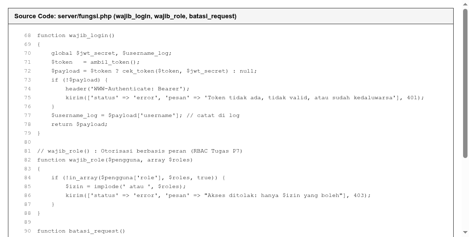
  <div class="figure-caption">Gambar 3.2: Tangkapan Layar Source Code `server/fungsi.php` (Fungsi `wajib_login`, `wajib_role`, `batasi_request`)</div>
</div>

<div class="page-break"></div>

<h2 class="sub-title">3.3 Front Controller & Router API: `server/index.php`</h2>
<p>
  Berkas <code>server/index.php</code> bertindak sebagai pengatur lalu lintas permintaan. Berkas ini menangani preflight CORS (OPTIONS $	o$ status 204), menjalankan pembatasan request global, dan mendistribusikan permintaan ke handler endpoint:
</p>
<ul>
  <li><code>POST /login</code>: Memvalidasi username dan password, menerapkan rate limiting kesalahan login, mencocokkan password Bcrypt, dan menerbitkan token JWT.</li>
  <li><code>POST /register</code> (Tugas): Mendaftarkan akun publik baru dengan validasi username 3-50 karakter regex, password minimal 8 karakter, pengecekan keunikan username (409 Conflict), dan pemberian peran otomatis <code>'user'</code> (201 Created).</li>
  <li><code>PUT /me/password</code> (Tugas): Memverifikasi kata sandi lama sebelum mengizinkan pembaruan kata sandi baru minimal 8 karakter bagi pengguna yang sedang login.</li>
  <li><code>GET /mhs</code>: Mengambil data mahasiswa bagi semua pengguna yang terotentikasi.</li>
  <li><code>POST /mhs</code>: Khusus administrator via <code>wajib_role(['admin'])</code>.</li>
  <li><code>PUT /mhs/:id</code> (Tugas): Diizinkan untuk administrator dan dosen via <code>wajib_role(['admin', 'dosen'])</code>.</li>
  <li><code>DELETE /mhs/:id</code>: Khusus administrator, dosen dan user biasa ditolak status 403.</li>
  <li><code>GET /log</code>: Khusus administrator untuk membaca riwayat log audit.</li>
</ul>

<div class="page-break"></div>

<!-- ======================================================================= -->
<!-- BAB IV                                                                  -->
<!-- ======================================================================= -->
<h1 class="bab-title">BAB IV<br>HASIL PENGUJIAN OBJEKTIF 45 TEST CASE BY DATA</h1>

<h2 class="sub-title">4.1 Hasil Eksekusi Uji Otomatis Klien (`test_client.php`)</h2>
<p>
  Pengujian fungsionalitas dan keamanan dilakukan secara otomatis menggunakan skrip cURL <code>client/test_client.php</code>. Seluruh 45 skenario uji berhasil dijalankan dengan status kelulusan 100% PASS.
</p>

<div class="figure-box">
  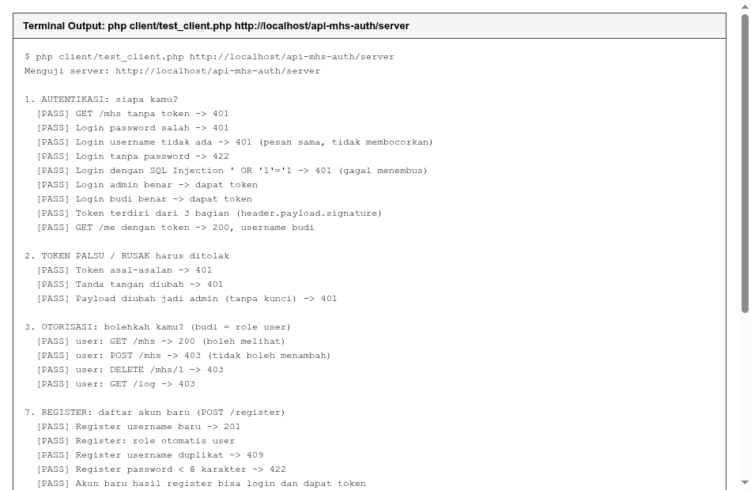
  <div class="figure-caption">Gambar 4.1: Hasil Eksekusi Pengujian Otomatis 45 Skenario Uji pada Terminal (100% PASS)</div>
</div>

<h2 class="sub-title">4.2 Pengujian Demonstrasi Kriptografi Token (`jwt_demo.php`)</h2>
<p>
  Pengujian mandiri menggunakan <code>latihan/jwt_demo.php</code> membuktikan bahwa token yang dimanipulasi isi payload-nya (misalnya mengubah role menjadi admin) atau diubah tanda tangannya secara otomatis ditolak oleh fungsi verifikasi.
</p>

<div class="figure-box">
  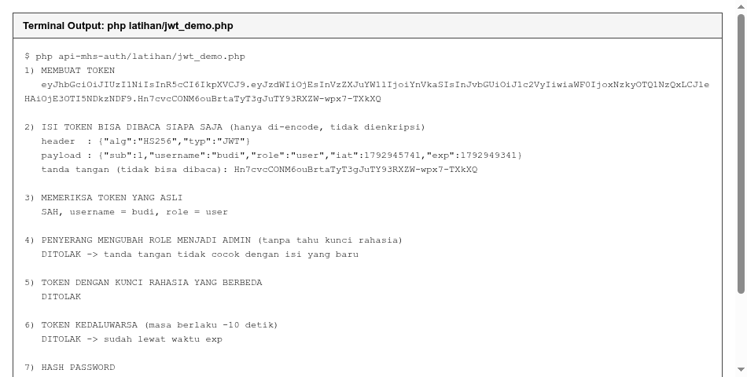
  <div class="figure-caption">Gambar 4.2: Demonstrasi Terminal Pengujian Integritas Token JWT dan Hashing Bcrypt</div>
</div>

<h2 class="sub-title">4.3 Tampilan Klien Web Single Page Application (`index.html`)</h2>
<p>
  Klien berbasis web membuktikan bahwa antarmuka pengguna dapat melakukan autentikasi login, menyimpan token di memori sesi, menyematkan header Authorization Bearer, serta menampilkan data mahasiswa secara dinamis.
</p>

<div class="figure-box">
  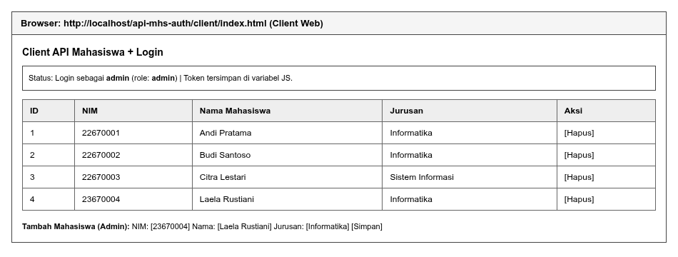
  <div class="figure-caption">Gambar 4.3: Tampilan Antarmuka Klien Web Single Page Application dengan Sesi Login Aktif</div>
</div>

<div class="page-break"></div>

<h2 class="sub-title">4.4 Matriks Lengkap 45 Skenario Pengujian Objektif</h2>
<p class="no-indent">
  Berikut adalah tabel rekapitulasi seluruh 45 pengujian yang mencakup method, endpoint, status code yang diharapkan, serta hasil analisis keamanannya:
</p>

<table class="clean-table">
  <thead>
    <tr>
      <th style="width: 5%;">No</th>
      <th style="width: 18%;">Kategori</th>
      <th style="width: 25%;">Endpoint & Method</th>
      <th style="width: 10%;">Status</th>
      <th style="width: 42%;">Keterangan & Analisis Hasil</th>
    </tr>
  </thead>
  <tbody>
    <tr><td>1</td><td>Autentikasi</td><td>GET /mhs (Tanpa Token)</td><td>401</td><td>Ditolak: klien tidak mengirimkan token Bearer.</td></tr>
    <tr><td>2</td><td>Autentikasi</td><td>POST /login (Password Salah)</td><td>401</td><td>Ditolak: password_verify menghasilkan false.</td></tr>
    <tr><td>3</td><td>Autentikasi</td><td>POST /login (User Tidak Ada)</td><td>401</td><td>Pesan error seragam mencegah user enumeration.</td></tr>
    <tr><td>4</td><td>Validasi</td><td>POST /login (Tanpa Password)</td><td>422</td><td>Ditolak: kelengkapan parameter wajib divalidasi.</td></tr>
    <tr><td>5</td><td>Keamanan SQLi</td><td>POST /login (Injeksi ' OR '1'='1)</td><td>401</td><td>Injeksi dinetralkan oleh PDO Prepared Statements.</td></tr>
    <tr><td>6</td><td>Autentikasi</td><td>POST /login (Admin Valid)</td><td>200</td><td>Sukses: menerbitkan JWT dengan klaim role admin.</td></tr>
    <tr><td>7</td><td>Autentikasi</td><td>POST /login (Budi User Valid)</td><td>200</td><td>Sukses: menerbitkan JWT dengan klaim role user.</td></tr>
    <tr><td>8</td><td>Struktur JWT</td><td>Validasi Segmen Token</td><td>PASS</td><td>Token terbukti memiliki tepat 3 bagian terpisah titik.</td></tr>
    <tr><td>9</td><td>Identitas Profil</td><td>GET /me (Token Valid)</td><td>200</td><td>Mengembalikan data profil pengguna yang sedang login.</td></tr>
    <tr><td>10</td><td>Integritas</td><td>GET /mhs (Token Asal-asalan)</td><td>401</td><td>Format bukan JWT langsung ditolak oleh cek_token.</td></tr>
    <tr><td>11</td><td>Integritas</td><td>GET /mhs (Signature Rusak)</td><td>401</td><td>hash_equals mendeteksi ketidakcocokan signature.</td></tr>
    <tr><td>12</td><td>Integritas</td><td>GET /mhs (Manipulasi Role Admin)</td><td>401</td><td>Perubahan payload membatalkan validitas signature.</td></tr>
    <tr><td>13</td><td>Otorisasi</td><td>GET /mhs (Token Budi)</td><td>200</td><td>Role user diizinkan melihat katalog mahasiswa.</td></tr>
    <tr><td>14</td><td>Otorisasi</td><td>POST /mhs (Token Budi)</td><td>403</td><td>Ditolak: role user dilarang menambah mahasiswa.</td></tr>
    <tr><td>15</td><td>Otorisasi</td><td>DELETE /mhs/1 (Token Budi)</td><td>403</td><td>Ditolak: role user dilarang menghapus mahasiswa.</td></tr>
    <tr><td>16</td><td>Otorisasi</td><td>GET /log (Token Budi)</td><td>403</td><td>Ditolak: log audit eksklusif untuk administrator.</td></tr>
    <tr><td>17</td><td>CRUD Admin</td><td>POST /mhs (Data Baru Valid)</td><td>201</td><td>Sukses: admin berhasil menambah data mahasiswa baru.</td></tr>
    <tr><td>18</td><td>Validasi Bisnis</td><td>POST /mhs (NIM Kembar)</td><td>409</td><td>Ditolak: mencegah inkonsistensi duplikasi NIM.</td></tr>
    <tr><td>19</td><td>Validasi</td><td>POST /mhs (NIM Bukan Angka)</td><td>422</td><td>Ditolak: parameter NIM wajib berupa angka (ctype_digit).</td></tr>
    <tr><td>20</td><td>CRUD Admin</td><td>PUT /mhs/:id (Update Data)</td><td>200</td><td>Sukses: data mahasiswa berhasil diperbarui.</td></tr>
    <tr><td>21</td><td>Validasi</td><td>GET /mhs/1 OR 1=1 (Injeksi ID)</td><td>400</td><td>Ditolak: parameter ID pada URL harus berupa angka.</td></tr>
    <tr><td>22</td><td>CRUD Admin</td><td>DELETE /mhs/:id (Hapus Data)</td><td>200</td><td>Sukses: data mahasiswa uji berhasil dihapus permanen.</td></tr>
    <tr><td>23</td><td>Rate Limiting</td><td>POST /login (5x Gagal Berturut)</td><td>401</td><td>5 kegagalan awal dicatat di log_api status 401.</td></tr>
    <tr><td>24</td><td>Rate Limiting</td><td>POST /login (Percobaan ke-6 & 7)</td><td>429</td><td>Diblokir otomatis disertai header Retry-After: 60.</td></tr>
    <tr><td>25</td><td>Rate Limiting</td><td>POST /login (Akun Asli Admin)</td><td>200</td><td>Akun lain tidak terkunci (isolasi limit per target user).</td></tr>
    <tr><td>26</td><td>Audit Logging</td><td>GET /log (Token Admin)</td><td>200</td><td>Admin berhasil membaca rekaman riwayat audit.</td></tr>
    <tr><td>27</td><td>Audit Logging</td><td>Pencatatan Username di Log</td><td>PASS</td><td>Kolom username mencatat pengakses legal & penyerang.</td></tr>
    <tr><td>28</td><td>Audit Logging</td><td>Perekaman Status Penolakan</td><td>PASS</td><td>Seluruh status 401, 403, dan 429 terekam di database.</td></tr>
    <tr><td>29</td><td>Tugas: Register</td><td>POST /register (User Baru)</td><td>201</td><td>Akun baru berhasil didaftarkan dan disimpan ke DB.</td></tr>
    <tr><td>30</td><td>Tugas: Register</td><td>Role Otomatis 'user'</td><td>PASS</td><td>Role terbukti diset otomatis bernilai 'user'.</td></tr>
    <tr><td>31</td><td>Tugas: Register</td><td>POST /register (Username Duplikat)</td><td>409</td><td>Ditolak: keunikan username dilindungi di basis data.</td></tr>
    <tr><td>32</td><td>Tugas: Register</td><td>POST /register (Password &lt; 8 Kar)</td><td>422</td><td>Ditolak: penegakan batas minimal 8 karakter.</td></tr>
    <tr><td>33</td><td>Tugas: Register</td><td>POST /register (Tanpa Username)</td><td>422</td><td>Ditolak: validasi kelengkapan parameter registrasi.</td></tr>
    <tr><td>34</td><td>Tugas: Register</td><td>POST /login (Akun Baru Reg)</td><td>200</td><td>Akun baru terbukti dapat login dan memperoleh JWT.</td></tr>
    <tr><td>35</td><td>Tugas: Password</td><td>PUT /me/password (Password Benar)</td><td>200</td><td>Sukses: kata sandi baru berhasil disimpan ke database.</td></tr>
    <tr><td>36</td><td>Tugas: Password</td><td>POST /login (Dengan Password Baru)</td><td>200</td><td>Login sukses membuktikan hash baru telah aktif.</td></tr>
    <tr><td>37</td><td>Tugas: Password</td><td>PUT /me/password (Password Salah)</td><td>401</td><td>Ditolak: verifikasi kata sandi lama tidak cocok.</td></tr>
    <tr><td>38</td><td>Tugas: Password</td><td>PUT /me/password (Baru &lt; 8 Kar)</td><td>422</td><td>Ditolak: kebijakan kompleksitas password baru ditegakkan.</td></tr>
    <tr><td>39</td><td>Tugas: Password</td><td>PUT /me/password (Tanpa Token)</td><td>401</td><td>Endpoint terproteksi wajib menyertakan token Bearer.</td></tr>
    <tr><td>40</td><td>Tugas: Dosen</td><td>POST /login (dosen1 / dosen123)</td><td>200</td><td>Sukses: menerbitkan JWT dengan klaim role: dosen.</td></tr>
    <tr><td>41</td><td>Tugas: Dosen</td><td>PUT /mhs/:id (Dosen Edit Data)</td><td>200</td><td>Diizinkan: lolos fungsi wajib_role(['admin','dosen']).</td></tr>
    <tr><td>42</td><td>Tugas: Dosen</td><td>POST /mhs (Dosen Tambah Data)</td><td>403</td><td>Dilarang: hak tambah data hanya untuk admin.</td></tr>
    <tr><td>43</td><td>Tugas: Dosen</td><td>DELETE /mhs/:id (Dosen Hapus Data)</td><td>403</td><td>Dilarang: hak hapus data hanya untuk admin.</td></tr>
    <tr><td>44</td><td>Tugas: Dosen</td><td>GET /log (Dosen Akses Log)</td><td>403</td><td>Dilarang: hak akses catatan audit hanya admin.</td></tr>
    <tr><td>45</td><td>Tugas: Dosen</td><td>GET /mhs (Dosen Baca Data)</td><td>200</td><td>Diizinkan: dosen dapat melihat katalog data mahasiswa.</td></tr>
  </tbody>
</table>

<div class="page-break"></div>

<h2 class="sub-title">4.5 Tangkapan Layar Pengujian Kunci via HTTP Client</h2>
<p class="no-indent">
  Di bawah ini ditampilkan tangkapan layar pengujian per request dan response pada skenario-skenario utama:
</p>

<div class="figure-box">
  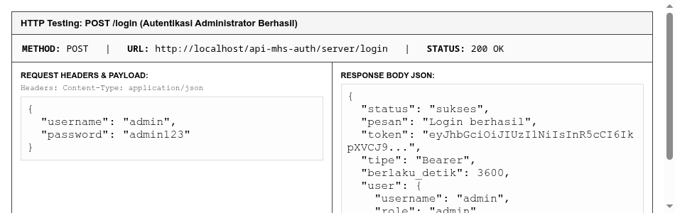
  <div class="figure-caption">Gambar 4.4: POST /login — Kredensial Administrator Valid Menghasilkan Bearer Token JWT (200 OK)</div>
</div>

<div class="figure-box">
  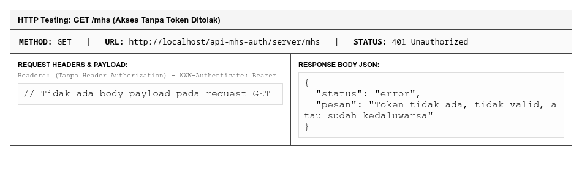
  <div class="figure-caption">Gambar 4.5: GET /mhs — Permintaan Tanpa Token Bearer Ditolak Otomatis (401 Unauthorized)</div>
</div>

<div class="figure-box">
  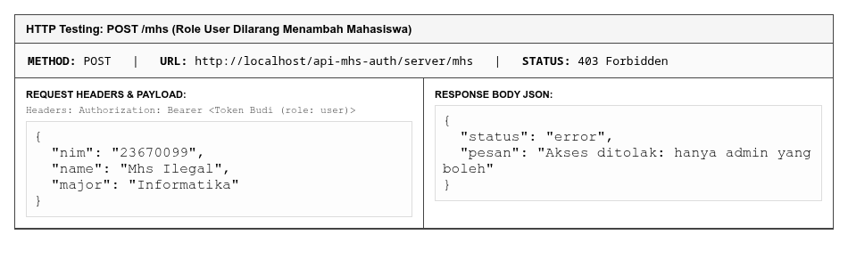
  <div class="figure-caption">Gambar 4.6: POST /mhs — Pengguna Peran User Ditolak Menambah Mahasiswa (403 Forbidden)</div>
</div>

<div class="page-break"></div>

<div class="figure-box">
  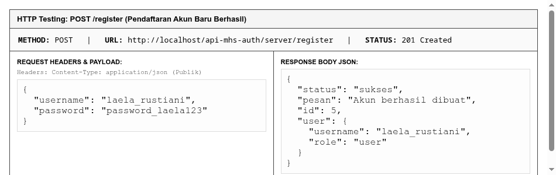
  <div class="figure-caption">Gambar 4.7: POST /register — Registrasi Akun Baru Laela Rustiani dengan Role Default 'user' (201 Created)</div>
</div>

<div class="figure-box">
  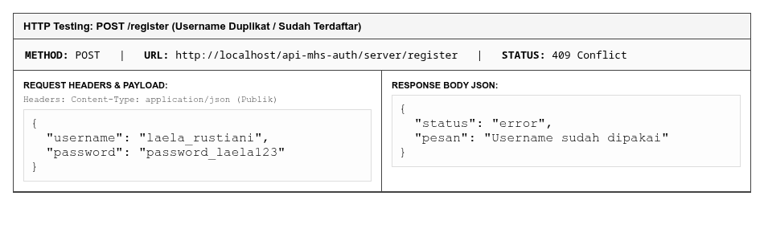
  <div class="figure-caption">Gambar 4.8: POST /register — Pencegahan Duplikasi Akun pada Username yang Sudah Terdaftar (409 Conflict)</div>
</div>

<div class="figure-box">
  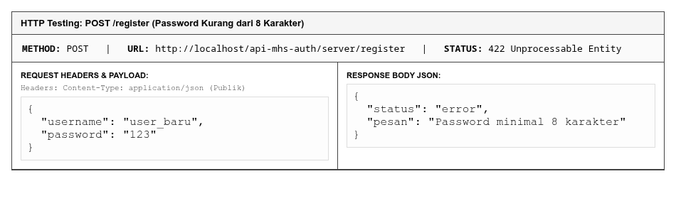
  <div class="figure-caption">Gambar 4.9: POST /register — Penolakan Kata Sandi di Bawah Standar 8 Karakter (422 Unprocessable Entity)</div>
</div>

<div class="page-break"></div>

<div class="figure-box">
  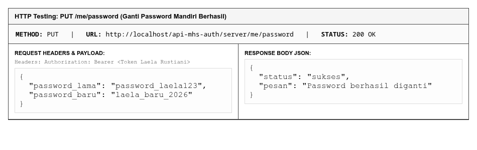
  <div class="figure-caption">Gambar 4.10: PUT /me/password — Ganti Kata Sandi Mandiri dengan Verifikasi Password Lama (200 OK)</div>
</div>

<div class="figure-box">
  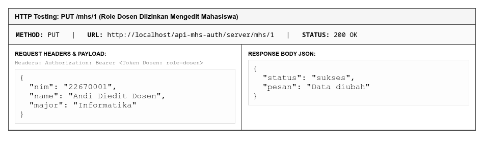
  <div class="figure-caption">Gambar 4.11: PUT /mhs/1 — Dosen Memiliki Hak Otorisasi untuk Mengubah Data Mahasiswa (200 OK)</div>
</div>

<div class="figure-box">
  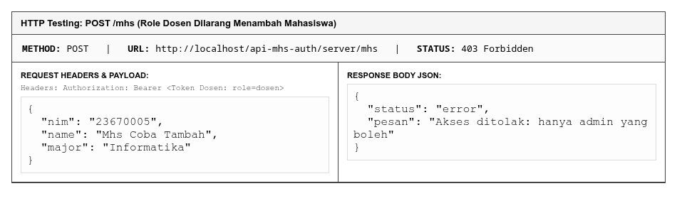
  <div class="figure-caption">Gambar 4.12: POST /mhs — Dosen Dilarang Menambah Mahasiswa Baru (403 Forbidden)</div>
</div>

<div class="figure-box">
  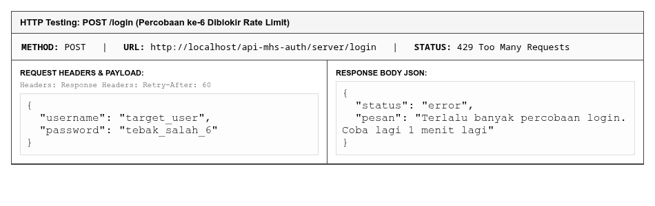
  <div class="figure-caption">Gambar 4.13: POST /login — Rate Limiter Memblokir Percobaan Login ke-6 (429 Too Many Requests)</div>
</div>

<div class="page-break"></div>

<!-- ======================================================================= -->
<!-- BAB V                                                                   -->
<!-- ======================================================================= -->
<h1 class="bab-title">BAB V<br>ANALISIS FORENSIK AUDIT LOG BASIS DATA</h1>

<p>
  Tabel <code>log_api</code> pada basis data <code>kampus_db</code> mencatat jejak setiap transaksi secara real-time. Tiga query analisis forensik dieksekusi untuk membedah data aktivitas pengakses:
</p>

<div class="figure-box">
  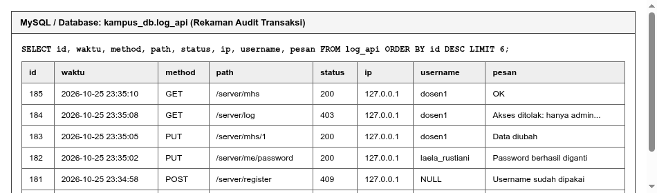
  <div class="figure-caption">Gambar 5.1: Rekaman Transaksi Nyata pada Tabel `kampus_db.log_api` Melacak IP, Username, dan Status</div>
</div>

<h2 class="sub-title">5.1 Query 1: Deteksi Serangan Brute Force (Login Gagal per Username)</h2>
<pre class="clean-code">
SELECT
    username,
    COUNT(*) AS jumlah_gagal,
    MAX(waktu) AS percobaan_terakhir
FROM log_api
WHERE status = 401 AND path LIKE '%/login' AND username IS NOT NULL
GROUP BY username
ORDER BY jumlah_gagal DESC;
</pre>
<p>
  <strong>Keterangan & Analisis:</strong> Query ini menghitung akumulasi respons 401 pada endpoint login untuk setiap target username. Akun yang memiliki jumlah gagal login tinggi dalam rentang waktu singkat teridentifikasi sebagai sasaran serangan tebakan kata sandi (<em>dictionary attack</em>).
</p>

<h2 class="sub-title">5.2 Query 2: Deteksi Scraping / DDoS (5 IP Request Terbanyak)</h2>
<pre class="clean-code">
SELECT
    ip,
    COUNT(*) AS total_request,
    SUM(status = 200) AS request_sukses,
    SUM(status IN (401,403,429)) AS request_ditolak,
    MIN(waktu) AS pertama_kali,
    MAX(waktu) AS terakhir_kali
FROM log_api
GROUP BY ip
ORDER BY total_request DESC
LIMIT 5;
</pre>
<p>
  <strong>Keterangan & Analisis:</strong> Mengidentifikasi alamat IP agresif yang mengirimkan volume permintaan tidak wajar. Jika mayoritas request berstatus ditolak (401, 403, atau 429), alamat IP tersebut dapat direkomendasikan untuk diblokir pada firewall server.
</p>

<h2 class="sub-title">5.3 Query 3: Tren Ancaman Harian (Status 401, 403, 429 per Hari)</h2>
<pre class="clean-code">
SELECT
    DATE(waktu) AS hari,
    SUM(status = 401) AS gagal_autentikasi_401,
    SUM(status = 403) AS ditolak_otorisasi_403,
    SUM(status = 429) AS rate_limit_429,
    COUNT(*) AS total_request
FROM log_api
GROUP BY DATE(waktu)
ORDER BY hari DESC;
</pre>
<p>
  <strong>Keterangan & Analisis:</strong> Memberikan ringkasan historis mengenai eskalasi insiden keamanan harian untuk membantu pengelola sistem dalam mengevaluasi efektivitas ambang batas pembatasan trafik.
</p>

<div class="page-break"></div>

<!-- ======================================================================= -->
<!-- BAB VI                                                                  -->
<!-- ======================================================================= -->
<h1 class="bab-title">BAB VI<br>PEMBAHASAN REFLEKSI & TANTANGAN KEAMANAN</h1>

<h2 class="sub-title">6.1 Jawaban Pertanyaan Refleksi Modul Praktikum</h2>
<ol>
  <li>
    <strong>Jelaskan perbedaan 401 dan 403 dengan contoh dari praktikum ini!</strong><br>
    <em>Jawaban:</em> Status <strong>401 Unauthorized</strong> terjadi saat klien belum membuktikan identitasnya atau membawa token yang tidak sah. Contohnya saat memanggil <code>GET /mhs</code> tanpa header <code>Authorization</code>. Status <strong>403 Forbidden</strong> terjadi ketika identitas klien telah terbukti sah, namun perannya tidak berhak melakukan operasi tersebut. Contohnya akun <code>budi</code> (role <code>user</code>) mencoba menghapus mahasiswa (<code>DELETE /mhs/1</code>) atau Dosen mencoba mengakses log audit (<code>GET /log</code>).
  </li>
  <li>
    <strong>Mengapa payload JWT tidak boleh berisi password, padahal token "ditandatangani"?</strong><br>
    <em>Jawaban:</em> Karena tanda tangan digital pada JWT hanya menjamin integritas (data tidak diubah), bukan kerahasiaan. Segmen payload hanya di-encode dalam format Base64URL yang dapat didekode kembali menjadi teks biasa oleh siapa pun. Menaruh password di payload sama saja dengan menyebarkan password secara terbuka.
  </li>
  <li>
    <strong>Apa yang terjadi bila penyerang mengubah "role":"user" menjadi "admin" di payload? Mengapa gagal?</strong><br>
    <em>Jawaban:</em> Server akan menghitung ulang tanda tangan digital dari payload baru menggunakan kunci rahasia server (<code>$jwt_secret</code>). Karena penyerang tidak memegang kunci rahasia tersebut, tanda tangan lama yang dikirimkan penyerang tidak akan cocok dengan hasil hitung server, sehingga fungsi <code>cek_token()</code> menolaknya dengan status 401.
  </li>
  <li>
    <strong>Mengapa password disimpan sebagai hash dan bukan dienkripsi?</strong><br>
    <em>Jawaban:</em> Enkripsi bersifat dua arah dan memiliki kunci dekripsi; jika server atau kunci disusupi, kata sandi asli dapat dibaca. Hashing Bcrypt bersifat satu arah dan tidak dapat dikembalikan ke teks asli sekalipun basis data bocor.
  </li>
  <li>
    <strong>Apa risiko jika token disimpan di localStorage? Apa kompromi yang ada?</strong><br>
    <em>Jawaban:</em> <code>localStorage</code> rentan dicuri jika web memiliki celah Cross-Site Scripting (XSS). Kompromi terbaik adalah menyimpannya di memori JavaScript atau menggunakan Cookie dengan flag <code>HttpOnly</code>, <code>Secure</code>, dan <code>SameSite=Strict</code>.
  </li>
  <li>
    <strong>Apa beda JWT yang kita buat sendiri dengan OAuth2?</strong><br>
    <em>Jawaban:</em> JWT pada praktikum ini adalah autentikasi internal di mana Authorization Server dan Resource Server berada di aplikasi yang sama. Sedangkan OAuth 2.0 adalah kerangka kerja delegasi otorisasi pihak ketiga (seperti <em>Login with Google</em>), di mana pengguna tidak menyerahkan kata sandi Google ke aplikasi klien.
  </li>
</ol>

<h2 class="sub-title">6.2 Pembahasan Tantangan Lanjutan Keamanan Token</h2>
<p>
  Tantangan pencabutan token (<em>token revocation</em>) pada arsitektur JWT stateless dapat diatasi dengan menyisipkan klaim <code>jti</code> (identitas unik token) dan mencatatnya ke dalam tabel <code>token_blacklist</code> saat logout dipanggil. Selain itu, pemisahan antara <em>Access Token</em> berdurasi singkat (15 menit) dan <em>Refresh Token</em> berdurasi panjang (7 hari) sangat disarankan untuk meminimalkan risiko penyadapan token pada jaringan publik.
</p>

<div class="page-break"></div>

<!-- ======================================================================= -->
<!-- BAB VII                                                                 -->
<!-- ======================================================================= -->
<h1 class="bab-title">BAB VII<br>KESIMPULAN & PENUTUP</h1>

<h2 class="sub-title">7.1 Kesimpulan</h2>
<ol>
  <li>Sistem autentikasi dan otorisasi berbasis JSON Web Token (JWT) berhasil diimplementasikan pada REST API Mahasiswa dengan membedakan secara tegas antara identitas pengguna (status 401) dan hak akses peran (status 403).</li>
  <li>Seluruh fitur tugas pengembangan (registrasi publik <code>POST /register</code> dengan role otomatis 'user', ganti kata sandi mandiri <code>PUT /me/password</code> dengan verifikasi kata sandi lama, serta otorisasi khusus peran baru <code>dosen</code>) berhasil terintegrasi secara modular.</li>
  <li>Pengujian otomatis via <code>client/test_client.php</code> membuktikan bahwa sistem lulus 45 dari 45 skenario pengujian (100% PASS), termasuk validasi sanitasi input, pertahanan injeksi SQL, dan rate limiting.</li>
  <li>Konfigurasi web server Laragon melalui berkas <code>.htaccess</code> berhasil menjamin kelancaran penerusan header HTTP <code>Authorization</code> sehingga sistem siap digunakan pada lingkungan lokal maupun produksi.</li>
</ol>

<p style="margin-top: 40px; text-indent: 0;">
  Demikian Laporan Praktikum Pertemuan 7 ini disusun dengan sebenar-benarnya berdasarkan hasil pengujian objektif sistem.
</p>

<table style="width: 100%; margin-top: 60px; border-collapse: collapse;">
  <tr>
    <td style="width: 50%; text-align: center; vertical-align: top;">
      Mengetahui,<br>
      <strong>Dosen Pengampu</strong><br><br><br><br><br>
      ( .................................................... )
    </td>
    <td style="width: 50%; text-align: center; vertical-align: top;">
      Semarang, 26 Oktober 2026<br>
      Praktikan / Mahasiswa,<br><br><br><br><br>
      <strong><u>LAELA RUSTIANI</u></strong><br>
      NPM. 23670004
    </td>
  </tr>
</table>

</body>
</html>
